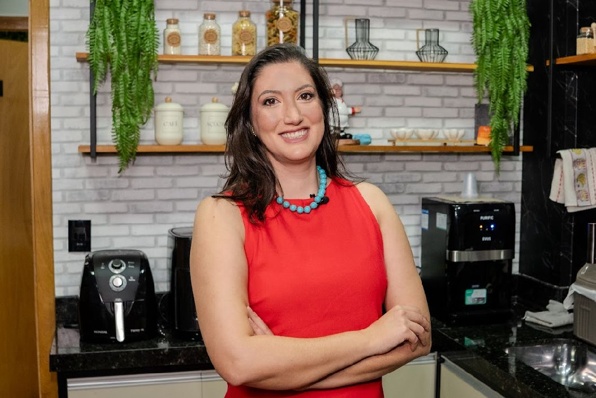

★★★★★
"Médica excelente! Atenciosa, explica tudo com calma e cuidado. Saí da consulta me sentindo realmente acolhida e segura."
(44) 3525-2167 · Campo Mourão

Acompanhamento ginecológico e obstétrico humanizado, com escuta atenta, base científica sólida e uma relação de confiança construída ao longo do tempo.
Mais de uma década dedicada à saúde da mulher, com formação em algumas das melhores escolas de medicina do país e o cuidado pessoal que só uma relação de confiança constrói.
Graduada em Medicina pela Universidade Federal do Paraná (2010), fiz residência em Tocoginecologia no Hospital de Clínicas da UFPR e me especializei em Ginecologia e Obstetrícia pelo Conselho Regional de Medicina do Paraná.
Atendimento integral em ginecologia e obstetrícia, da adolescência ao climatério — sempre com base científica, escuta e respeito ao seu tempo.
Acompanhamento de saúde íntima ao longo de cada fase: prevenção, exames de rotina e orientação.
Cuidado integral durante a gestação, parto e pós-parto, com escuta atenta e segura.
Acompanhamento gestacional humanizado, com foco no vínculo entre mãe e bebê.
Avaliação detalhada do colo do útero para diagnóstico precoce e prevenção de lesões.
Orientação personalizada sobre métodos contraceptivos, respeitando seu corpo e seu projeto de vida.
Suporte clínico e emocional para viver essa fase com bem-estar, qualidade de vida e informação.
Atendimento delicado para crianças e adolescentes, criando relação de confiança desde cedo.
Coautora de obra científica sobre HPV. Diagnóstico, tratamento e vacinação com base em evidências.
Defensora do parto normal e humanizado, respeitando o tempo, as escolhas e a singularidade de cada mulher.
Traga seu bebê ao mundo
em boas mãos.
Um espaço pensado para acolher — desde a recepção até a sala de atendimento. Conheça o ambiente e a equipe que cuidam de você.
Mais de 290 pacientes deixaram suas opiniões no Doctoralia — abaixo, alguns trechos que resumem o cuidado que procuramos oferecer todos os dias.
O agendamento pode ser feito pelo Doctoralia, WhatsApp ou diretamente pelo telefone do consultório. Atendimento de segunda a sexta.